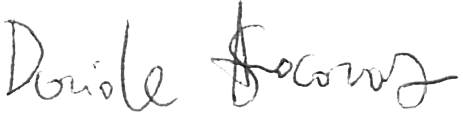

L’autore
Davide Stocovaz
Davide Stocovaz è nato a Trieste nel 1985.
È autore di diversi romanzi e sceneggiatore. Alterna il percorso in narrativa con la stesura di racconti e poesie.
Nel 2010 vince il Primo Premio Internazionale per la Sceneggiatura Mattador, dedicato a Matteo Caenazzo.
Collabora con diverse riviste letterarie.
